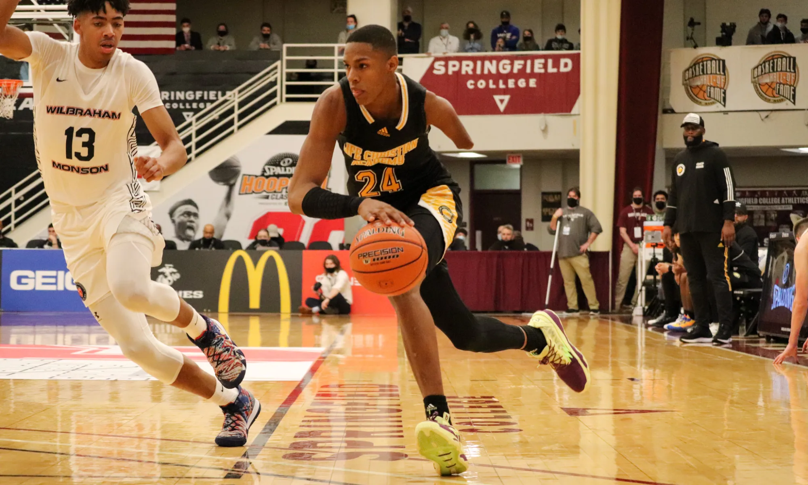

Galería de Hansel Emmanuel


¿Quién es Hansel Emmanuel?
Hansel Emmanuel es un jugador de baloncesto originario de República Dominicana que ha captado la atención del mundo debido a su increíble talento en la cancha, a pesar de tener solo un brazo. Perdió su extremidad derecha en un accidente cuando era niño, pero eso no le impidió perseguir su sueño de jugar al baloncesto profesional.
Superando Límites
Hansel ha demostrado que la discapacidad no es un obstáculo para lograr grandes cosas en el deporte. Ha jugado en ligas importantes de Estados Unidos y ha inspirado a miles con su habilidad, determinación y espíritu inquebrantable.
"Nada es imposible si crees en ti mismo."
Logros Destacados
- Jugador destacado en ligas profesionales de baloncesto en Estados Unidos.
- Embajador de iniciativas deportivas inclusivas para personas con discapacidad.
- Ha sido reconocido por su capacidad para superar barreras físicas y mentales.